Anagrafe animali
Il menù anagrafe animali consente
la gestione di tutte le specie animali presenti in banca dati.
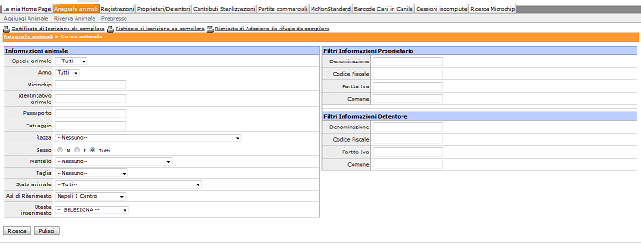
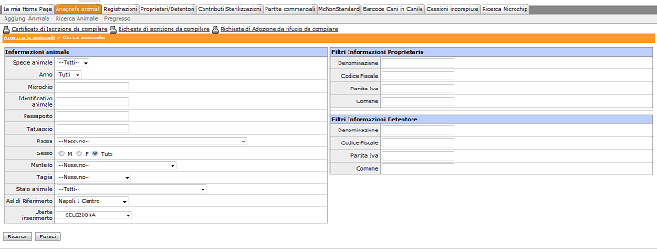
In questo modulo è possibile effettuare operazioni del tipo:
- Aggiungi animali
- Ricerca animali
- Pregresso
- Stampa certificati da compilare (Certificato di Iscrizione, Richiesta di Iscrizione, Richiesta di Adozione da rifugio)
Aggiungi animale
Il sottomenù aggiungi animale
permette l'inserimento di ognuna delle specie di animali che è possibile
censire in banca dati.
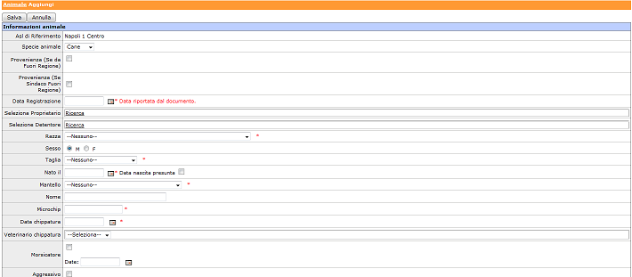
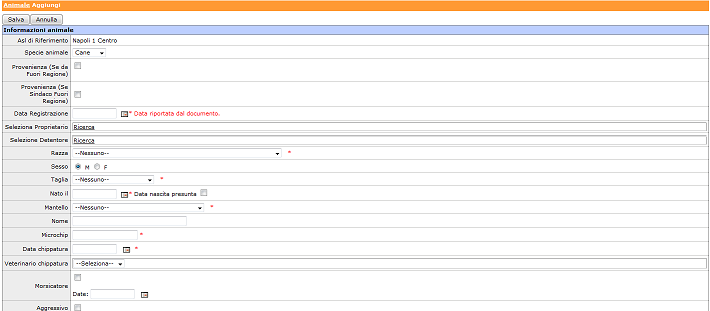
I campi contrassegnati con l'asterisco (*) sono obbligatori. Dal menù a
tendina accanto alla dicitura "Specie animale" è possibile scegliere la
specie dell'animale che si sta inserendo. In base alla specie scelta, le
informazioni necessarie e/o obbligatorie possono variare.
Registrazioni
Nel modulo riservato alle Registrazioni è possibile effettuare esclusivamente operazioni di ricerca sulle registrazioni presenti nel sistema, la maschera si presente nel seguente modo:
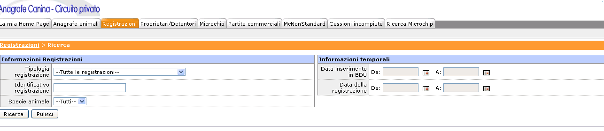
- Tipologia registrazione
- Identificativo registrazione
- Specie animale
sia avendo a disposizioni informazioni temporali, del tipo:
- Data inserimento in BDU
- Data della registrazione
Dopo aver effettuato la ricerca, all'utente si presenterà la maschera in cui è presente l'identificativo della restrazione, la tipologia della registrazione, data inserimento in BDU, data effettiva in cui è stata effettuata la registrazione, proprietari e detentore dell'animale, microchip ed Asl di riferimento dell'animale.

Tipologia registrazioni
A seconda dello stato dell'animale, è possibile aggiungere opportunamente le registrazioni tra le seguenti tipologie:
- Adozione da canile
- Cattura
- Cessione
- Decesso
- Furto
- Inserimento microchip
- Presa in carico da cessione
- Registrazione in BDU
- Restituzione da canile
- Rilascio Passaporto
- Ritrovamento
- Smarrimento
- Sterilizzazione
- Trasferimento
- Trasferimento fuori regione
- Adozione a distanza
- Adozione da colonia
- Cambio detentore
- Controlli commerciali
- Esito controlli
- Inserimento secondo microchip/tatuaggio
- Inserimento vaccinazioni
- Morsicatore
- Reimmissione
- Ricattura
- Rientro da fuori regione
- Rientro da fuori stato
- Trasferimento canile
- Trasferimento fuori regione solo proprietario
- Trasferimento fuori stato
Proprietari/Detentori
Nel modulo proprietari/detentori, è possibile fare due operazioni:
- Aggiungi proprietario
- Ricerca proprietario
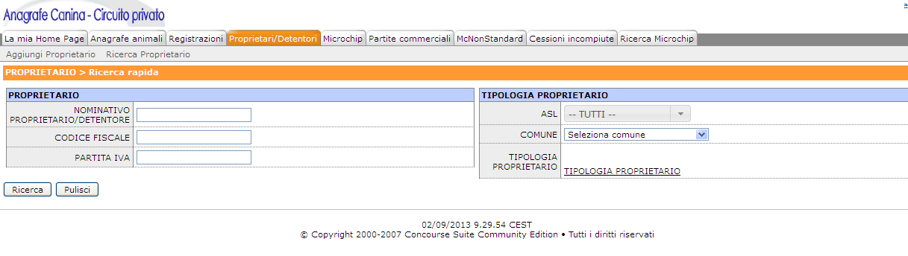
Ricerca proprietario
Per effettuare la ricerca dei proprietari già presenti in anagrafica, è indispensabile selezionare una tra le tipologie proprietari. Cliccando sul link "Tipologia Proprietario", si apre una popup in cui l'utente deve spuntare una o più tipologie di proprietario/detentore tra quelle presenti nell'elenco, ovvero: PRIVATO, Sindaco, Operatore Commerciale / Importatore, Canile, Operatore Commerciale, SINDACO_FR, Colonia. Gli altri campi presenti nella maschera tipo ASL, COMUNE, PARTITA IVA, CODICE FISCALE, NOMINATIVO PROPRIETARIO/DETENTORE, sono valorizzabili facoltativamente.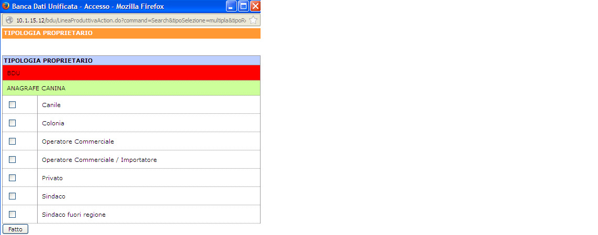
Aggiungi proprietario
Come detto anche in altri paragrafi, esistono varie tipologie di proprietari, ovvero:
- Privato
- Sindaco
- Operatore Commerciale/Importatore
- Canile
- Operatore Commerciale
- Sindaco_FR
- Colonia
I canili fuori regione possono essere inseriti in bdu previa comunicazione all'Help Desk.
Gli utenti liberi professionisti non sono abilitati abilitati ad inserire proprietari.
Inserimento di una colonia nel sistema
L'applicativo BDU permette il censimento di proprietari di tipo colonia. Per poter procedere al censimento di una colonia, l'operatore, una volta identificatosi nel sistema, deve accedere al modulo Proprietari/Detentori, sottomodulo Aggiungi Proprietario e scegliere, nella lista dei possibili operatori, quello con dicitura "Colonia".
Nella maschera che appare, le informazioni necessarie all'operatore per poter proseguire con successo all'inserimento della colonia sono:
- Informazioni anagrafiche sul Referente della colonia
- Indirizzo della colonia
- Informazioni sulla colonia:
- Numero decreto identificativo della colonia
- Data di registrazione colonia
- Numero totale gatti + Informazione sull'esatezza di tale numero (Numero Presunto/Non presunto)
- Data del censimento dei gatti della colonia
- Numero totale gatto di sesso maschio + Informazione sull'esatezza di tale numero (Numero Presunto/Non presunto)
- Numero totale gatti di sesso femmina + Informazione sull'esatezza di tale numero (Numero Presunto/Non presunto)
- Nominativo del veterinario di riferimento della colonia
( Completato questo primo step, l'operatore può cliccare sul pulsante "Inserisci" per poter andare avanti con l'inserimento).
Nella schermata successiva le informazioni richieste (non tutte obbligatorie) sono:
Delle informazioni elencate sopra, quelle obbligatorie saranno l'indirizzo della colonia, il numero di decreto, il numero totale di gatti (eventualmente presunto), la data di censimento della colonia, il nominativo del veterinario.
E' importante sapere, come vedremo in seguito, che il numero totale di gatti appartenente ad una colonia può essere modificato nel tempo, attraverso l'inserimento nel sistema di una registrazione di modifica del numero di gatti appartenenti alla colonia. Tale registrazione modificherà il numero totale di gatti senza interferire con eventuali gatti già censiti e quindi con le informazioni calcolate che riguardano la colonia e che analizzeremo nel paragrafo successivo.
Informazioni dinamiche delle colonie.
Una volta che una colonia è stata anagrafata nel sistema BDU, è possibile fondamentalmente su di essa eseguire due tipi di operazioni:
- Registrare una modifica del numero di gatti appartenenti ad essa
- Censire in BDU i gatti appartenenti alla colonia
Appena inserita in BDU, una colonia ha fondamentalmente solo l'informazione sul numero di gatti che la compongono (eventualmente presunto).
Il secondo passo è censire questi gatti, immettendo nel sistema, per ognuno di essi, le informazioni che lo riguardano.
Per censire un gatto in una colonia esistono due alternative:
- Cliccare sul pulsante Aggiungi gatto raggiungibile dal dettaglio della colonia.
- Accedere al menù Anagrafe animali, sottomenù Aggiungi animale e, dopo aver scelto la specie "Gatto", procedere all'inserimento scegliendo come proprietario la colonia a cui si vuole aggiungere il gatto.
I due modi di procedere sono equivalenti.
Quando viene censito un gatto appartenente ad una colonia, di questa si popolano congruentemente anche le informazioni dinamiche (cioè quelle non immesse direttamente dall'operatore). In particolare tali informazioni (visibili dal dettaglio della colonia) sono:
- Numero totale gatti identificati: tale numero indica il numero totale dei gatti che sono stati censiti nella colonia
- Numero totale gatti ancora da identificare: tale numero rappresenta la differenza tra il numero totale di gatti che la compongono (informazione statica inserita dall'operatore) e il numero di gatti già identificati (censiti) del punto precedente
- Numero gatti sterilizzati: tale numero indica il numero di gatti, tra quelli già identificati, per i quali nel sistema è presente una registrazione di sterilizzazione. L'informazione sulla sterilizzazione può essere stata immessa contestualmente all'inserimento in BDU o in seguito, attraverso la funzionalità di aggiunta registrazioni offerta dal sistema.
- Numero gatti da sterilizzare: tale numero indica il numero di gatti, tra quelli già identificati, per i quali nel sistema non è presente una registrazione di sterilizzazione
- Numero totale gatti identificati: tale numero indica il numero totale dei gatti che sono stati censiti nella colonia
- Numero totale gatti identificati + Numero totale gatti da identificare = Numero totale gatti della colonia
- Numero gatti sterilizzati + Numero gatti da sterilizzare = Numero totale gatti identificati
(Ogni gatto appartenente alla colonia e identificato può essere sterilizzato o meno) - Se per una colonia vale:
- Numero totale gatti identificati = Numero totale gatti della colonia e conseguentemente Numero totale gatti da identificare = 0, per il sistema vuol dire che tutti i gatti appartenenti alla colonia sono stati censiti e, quindi, non sarà possibile più aggiungere ad essa gatti. Per poter procedere l'operatore deve prima effettuare una registrazione di modifica dei gatti totali presenti nella colonia.
Modifica della dimensione della colonia
Su una colonia già esistente, è possibile inserire una registrazione di modifica del numero totale di gatti. Per fare questo, l'operatore, dal dettaglio della colonia deve cliccare sul link "Registrazione di modifica dimensione della colonia". Si aprirà una schermata in cui l'utente dovrà inserire la data del nuovo censimento, il nuovo numero totale di gatti censiti nella colonia. E' opportuno specificare che questo numero deve essere il nuovo numero totale e non il numero di gatti da aggiungere al precedente censimento. Il sistema andrà in errore se il nuovo numero immesso sarà inferiore al numero di gatti già censiti nella colonia, in quanto si creerebbero incongruenze. Da notare, però, che è possibile inserire un numero inferiore a quello del precedente censimento solo nel caso il numero di gatti censiti è inferiore al numero del precedente censimento e inferiore o uguale a quello del nuovo censimento che si sta registrando. Questo nuovo censimento sarà il punto di partenza per il calcolo di tutte le proprietà dinamiche della colonia descritte nel paragrafo precedente.
Microchip
La maschera microchip si presenta nel seguente modo:

Le operazioni possibili in questo modulo sono:
- Ricerca
- Importa
- Scarico MC
- Carico MC
Questa funzionalità è usata quasi esclusivamente da utenti avente ruolo Veterinario Privato, poichè gli viene assegnato dall'ASL una lista di microchip da assegnare, per cui il veterinario li importa (carica) e solo dopo aver concluso questa operazione, può assegnare il microchip ad un animale e può a questo punto anagrafarlo nel sistema.
Contributi Sterilizzazioni
Introduzione
La pratica per il pagamento dei contributi relative alle sterilizzazioni dei cani, vede coinvolti due tipologie di utenti presenti in Anagrafe: gli amministratori delle asl e l'utente Regione. I primi, sono coloro i quali si occupano di inviare le richieste per il pagamento dei contributi stessi, il secondo, invece si occupa di approvare o respingere le pratiche di pagamento ricevute. L'applicativo presenterà un insieme di progetti aperti per il pagamento del contributo di sterilizzazione, che verranno inseriti, da un utente con ruolo "Utente Regione". Ogni modifica da apportare al progetto, dovrà essere supportata da una richiesta alla regione, la quale eventualmente, dopo opportuni controlli, provvederà ad aprire una segnalazione all'help desk stesso nel caso di modifiche. Il pagamento dei contributi vede coinvolti sia i cani che i gatti registrati nell'Anagrafe della regione Campania. (sono esclusi i furetti).All'atto di una registrazione di un cane /gatto in anagrafe, è possibile inserire i dati relativi alla sterilizzazione e se è stato richiesto per esso il pagamento del contributo. Oppure, successivamente all'inserimento, è possibile effettuare una registrazione di sterilizzazione, indicando chi ha sterilizzato il cane/gatto, la data e se per esso è stato richiesto il pagamento del contributo. In entrambi i casi, all'atto della selezione del flag del contributo, comparirà la lista dei progetti aperti, che coinvolgono l'asl dell'utente corrente. Nel caso in cui, si trattasse di un veterinario libero professionista accreditato, i progetti riguarderanno l'asl del proprietario dell'animale. In entrambi i casi, dopo aver inserito tale informazione, non sarà assolutamente possibile, modificare la data ed il flag del contributo.
Progetti di sterilizzazione
I progetti di sterilizzazione vengono inseriti solo ed esclusivamente dagli utenti con ruolo Utente Regione. Ogni progetto prevede le seguenti informazioni:
- Asl
- Comuni coinvolti
- Oggeto del decreto
- Numero del decreto
- Data Decreto
- Data Inzio sterilizzazione
- Data fine sterilizzazione
- Numero Decreto
- Numero totale di cani catturati
- Numero totale di cani padronali
- Numero totale di gatti catturati
- Numero totale di gatti padronali
Aggiunta di un animale ad un progetto
Di seguito sono indicate le modalità di aggiunta delle informazioni di sterilizzazioni sia per i cani che per i gatti.
CASO 1. - INSERIMENTO DI UN CANE CATTURATO/PADRONALE CON STERILIZZAZIONE E RICHIESTA CONTRIBUTO
All'atto dell'inserimento di un cane, dovrà essere selezionato in primis il proprietario e il detentore. Sulla base di tale informazione, nel momento in cui viene indicata la data di sterilizzazione, e selezionato il flag per la richiesta del pagamento del contributo, comparirà un elenco, contenente tutti i progetti realizzati sull'asl di pertinenza, il cui intervallo di sterilizzazione comprende la data indicata e per cui ci sono delle posizioni aperte. All'atto dell'inserimento del cane, l'applicativo controllerà che il comune del proprietario coincida con un comune relativo al progetto, e che se il cane è catturato, vi siano posizioni disponibili come cani catturati, viceversa se si tratta di un padronale, vi siano posizioni aperte per i padronali. Altrimenti il software darà indicazioni su come procedere. Dopo aver inserito il cane, nella maschera di dettaglio, se tutto è andato a buon fine, comparirà la pratica associata al cane. Successivamente, le posizioni disponibili su tale progetto, non saranno più quelle iniziali, ma ce ne sarà una in meno. Quando tali posizioni saranno state occupate, e non ve ne sarà neanche una disponibile, allora il software avviserà l'utente di ciò.
CASO 2. - INSERIMENTO DI UN GATTO CATTURATO/COLONIA/PADRONALE CON STERILIZZAZIONE E RICHIESTA CONTRIBUTO
Analogamente a quanto indicato sopra, le stesse modalità sono previste per l'inserimento di gatti. In particolare, i gatti di colonia, saranno considerati come i catturati, e pertanto andranno ad occupare le posizioni disponibili per i catturati.
CASO 3. - INSERIMENTO DI UNA REGISTRAZIONE DI STERILIZZAZIONE E RICHIESTA CONTRIBUTO PER UN CANE/GATTO SUCCESSIVA ALL'INSERIMENTO
Successivamente, le posizioni disponibili su tale progetto, non saranno più quelle iniziali, ma ce ne sarà una in meno, in quanto ogni qualvolta che una posizione viene occupata da un'animale, essa viene scalata da quelle libere. Quando tali posizioni saranno state occupate, e non ve ne sarà neanche una disponibile, allora il software avviserà l'utente di ciò.
Partite commerciali
La maschera relativa al modulo Partite Commerciali si presenta nel seguente modo:

Le possibili operazioni che possono essere fatte in questo modulo sono:
- Nuova partita commerciale
- Visualizza partite commerciali
- Richieste Importatori
McNonStandard
Nel modulo McNonStandard è presente un elenco di microchip che sono diversi dal solito, ovvero non sono 15 cifre numeriche. Attualmente non è più possibile inserirne altri.
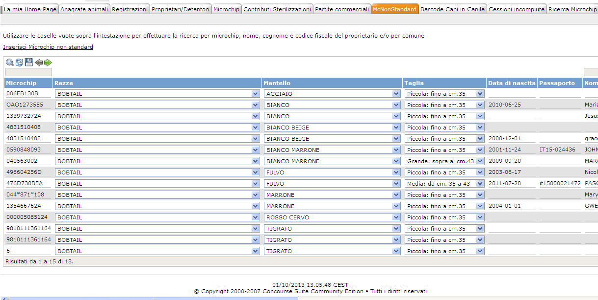
Barcode cani in canile
Dal modulo "Barcode cani in canile", l'operatore può generare il modulo "Scheda per l'invio di campioni all'IZS del Mezzogiorno" contenente i BARCODE relativi agli animali presenti in un dato canile.

La lista dei canili varia a seconda dell'ASL dell'operatore che opera nel sistema, per cui l'operatore ha la possibilità di selezionarne uno e procedendo con l'estrazione può visualizzare l'elenco dei cani presenti in esso, selezionando opportunamente i microchip dei cani di cui ha bisogno, può generare un'unica Scheda per l'invio di campioni all'IZS del Mezzogiorno, contenete tutti i barcode dei cani selezionati

Cessioni Incompiute
Nel modulo Cessioni incompiute, l'utente può visualizzare:
- L'elenco delle Cessioni in ingresso alla propria ASL di appartenenza
- L'elenco delle Cessioni in uscita, ovvero l'elenco delle cessioni effettuate dalla propria ASL verso altre ASL.
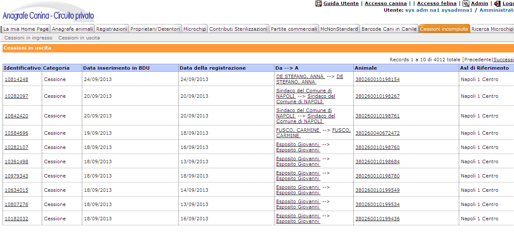
Ricerca Microchip
Nel modulo Ricerca Microchip, inserendo opportunamente un microchip presente in anagrafe, l'utente può generare due moduli:
- Scheda per l'invio dei campioni
- Scarica solo immagine barcode

Note sulle registrazioni effettuate fuori dominio asl
E' stata introdotta, in BDU, la possibilità di inserire registrazioni a carico di animali non appartenenti all'asl di competenza dell'utente. Tali registrazioni si possono suddividere in due categorie, descritte nel seguito. La prima categoria comprende le registrazioni che non modificano il detentore del cane:
- Sterilizzazione
- Prelievo DNA
- Prelievo Campioni Leishmana
- Decesso
- Inserimento Vaccinazioni (Rabbia Leishmania)
- Rilascio Passaporto
- Rinnovo / Smarrimento Passaporto
La seconda categoria comprende le registrazioni che modificano il detentore del cane:
- Ritrovamento
- Ritrovamento (Smarrimento non denunciato)
- Prelievo Campioni Leishmana
- Ricattura
L'inserimento delle registrazioni del primo gruppo non modifica il normale flusso delle registrazioni possibili sugli animali, il secondo, invece, modifica il comportamento del flusso, in particolare permettendo all'asl fuori dominio di effettuare delle registrazioni normalmente non possibili ed eliminando, temporaneamente, per l'asl proprietaria, la possibilità di eseguirne altre. Come sempre, il flusso delle registrazioni dipende dallo stato dell'animale. Nel seguito evidenziamo gli scenari possibili a seconda dei vari casi.
Animali Padronali

Nella figura 1 è visibile la lista delle registrazioni possibili fuori dominio asl su un animale padronale, non smarrito. In particolare, la registrazione che modifica il detentore dell'animale è quella di Ritrovamento non denunciato. Dopo l'inserimento di tale registrazione, il cane passa temporaneamente "in carico" all'asl che sta inserendo la registrazione, naturalmente non sarà visibile nessun cambiamento nell'asl proprietaria dell'animale. In seguito a ciò, sia l'asl proprietaria che l'asl con l'animale in carico possono inserire una registrazione che svincola l'asl "in carico" dalla detenzione dell'animale. In particolare possono farlo attraverso le registrazioni di (vedi Fig.2):
- Decesso
- Restituzione a proprietario
- Trasferimento canile
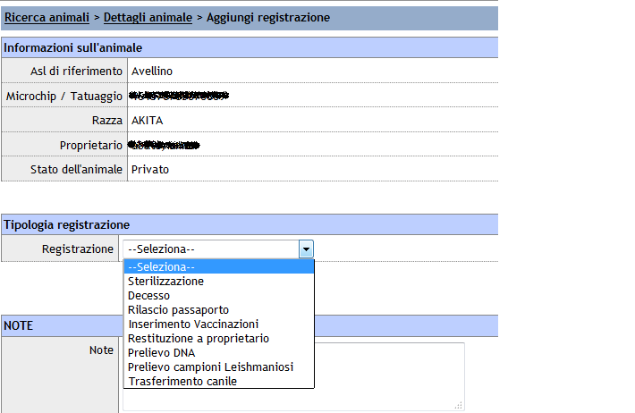
Restano attive, esclusivamente per l'asl con l'animale in carico, le registrazioni effettuabili fuori dominio asl e che non prevedono il cambio detentore, cioè quelle appartenenti alla prima categoria. E' opportuno notare, a questo punto, che il flusso è identico se trattasi di animale padronale in stato smarrito: l'unica eccezione è sulla registrazione di ritrovamento, che non sarà quella senza denuncia smarrimento ma il ritrovamento in seguito a uno smarrimento.
Animali Randagi (Precedentemente in canile)

Nella figura 3 è visibile la lista delle registrazioni possibili fuori dominio asl su un animale randagio, precedentemente in canile. In particolare, la registrazione che modifica il detentore dell'animale è quella di Ritrovamento non denunciato. Dopo l'inserimento di tale registrazione, il cane passa temporaneamente "in carico" all'asl che sta inserendo la registrazione, naturalmente non sarà visibile nessun cambiamento nell'asl proprietaria dell'animale. In seguito a ciò, sia l'asl proprietaria che l'asl con l'animale in carico possono inserire una registrazione che svincola l'asl "in carico" dalla detenzione dell'animale. In particolare possono farlo attraverso le registrazioni di (vedi Fig.4):
- Decesso
- Adozione
- Trasferimento a canile origine
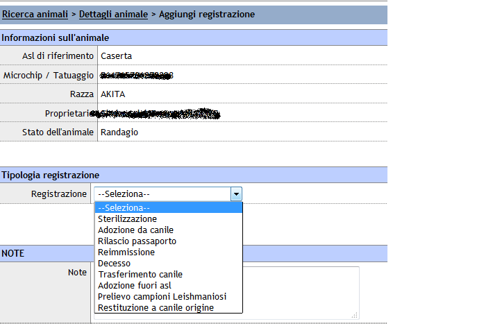
Restano attive , esclusivamente per l'asl con l'animale in carico, le registrazioni effettuabili fuori dominio asl e che non prevedono il cambio detentore, cioè quelle appartenenti alla prima categoria. E' opportuno notare, a questo punto, che il flusso è identico se trattasi di animale padronale in stato smarrito: l'unica eccezione è sulla registrazione di ritrovamento, che non sarà quella senza denuncia smarrimento ma il ritrovamento in seguito a uno smarrimento.
Animali Randagi (Precedentemente sul territorio)
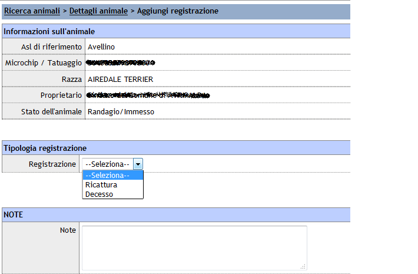
Nella figura 5 è visibile la lista delle registrazioni possibili fuori dominio asl su un animale randagio, precedentemente sul territorio. In particolare, la registrazione che modifica il detentore dell'animale è quella di Ricattura. Dopo l'inserimento di tale registrazione, il cane passa temporaneamente "in carico" all'asl che sta inserendo la registrazione, naturalmente non sarà visibile nessun cambiamento nell'asl proprietaria dell'animale. In seguito a ciò, sia l'asl proprietaria che l'asl con l'animale in carico possono inserire una registrazione che svincola l'asl "in carico" dalla detenzione dell'animale. In particolare possono farlo attraverso le registrazioni di (vedi Fig.6):
- Decesso
- Adozione
- Trasferimento a canile
- Reimmissione
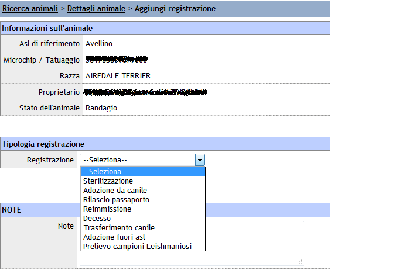
Restano attive, esclusivamente per l'asl con l'animale in carico, le registrazioni effettuabili fuori dominio asl e che non prevedono il cambio detentore, cioè quelle appartenenti alla prima categoria. E' opportuno notare, a questo punto, che il flusso è identico se trattasi di animale padronale in stato smarrito: l'unica eccezione è sulla registrazione di ritrovamento, che non sarà quella senza denuncia smarrimento ma il ritrovamento in seguito a uno smarrimento.